DIMCAC · Coordenadoria de Meios de Fiscalização e Controle
GUIA DO USUÁRIOAUTOMATIZADOR DE DIÁRIAS
Guia rápido de instalação e operação
Versão do aplicativo2.0.0
DataAgosto de 2026
Público-alvoServidores do DIMCAC
Sumário
1Antes de começar — organize sua pasta de trabalho3
2Instalando o Automatizador de Diárias4
3Configurando a Planilha Oficial5
4Tela inicial (Hub)6
5Processando Diárias8
6Central de Conferência12
7Central Analítica16
8Finalizando (confirmando) diárias17
9Fechando o aplicativo22
10Boas práticas e fluxo resumido23
💡 Dica
Este guia foi feito para ser consultado por partes — não precisa ler tudo de uma vez. Use o sumário
para ir direto à tela que você está usando agora.
1
Antes de abrir o aplicativo
Organize sua pasta de trabalho
Antes de instalar ou usar o Automatizador de Diárias, organize manualmente a pasta onde fica a sua
Planilha Oficial. Recomendamos criar três pastas no mesmo diretório da planilha:
DIMCAC/
│
├── CONTROLE DIÁRIAS MEMBROS E SERVIDORES - Banco de Dados 2026.xlsx
│
├── PDFS A PROCESSAR/
├── PDFS PROCESSADOS/
└── PDFS DIÁRIAS PARA CONFIRMAR/
📥
PDFS A PROCESSAR Coloque aqui os PDFs de processos do SEI que ainda serão utilizados na tela de Processamento da Planilha.
✅
PDFS PROCESSADOS Use para guardar os PDFs cujo processamento e preenchimento na planilha já foram concluídos e conferidos.
📋
PDFS DIÁRIAS PARA CONFIRMAR Coloque aqui os processos que serão usados depois na função Finalizar Diárias (confirmação de comprovantes).
⚠ Atenção
O aplicativo não move os PDFs automaticamente entre essas pastas. Essa organização é
inteiramente manual — você mesmo arrasta os arquivos de uma pasta para outra, conforme avança no
trabalho. Pense nelas como uma esteira de organização, não como uma função do programa.
2
Primeiro acesso
Instalando o Automatizador de Diárias
A instalação é feita com um único arquivo instalador, sem necessidade de nenhum programa adicional.
Localize o instalador recebido — um arquivo com nome parecido com
“Automatizador de Diárias Setup.exe”, geralmente enviado pela pasta compartilhada do setor.
Dê duplo clique no arquivo para executá-lo.
Se o Windows perguntar “Deseja permitir que este aplicativo faça alterações no dispositivo?”,
clique em Sim.
Siga o assistente de instalação normalmente, usando as opções padrão sugeridas — não é
necessário alterar a pasta de destino.
Ao final, clique em Concluir. O instalador cria automaticamente um atalho na Área de
Trabalho e no Menu Iniciar chamado “Automatizador de Diárias”.
Abra o aplicativo por esse atalho. Na primeira execução, a tela abaixo é exibida:
Tela de boas-vindas — confirma que o aplicativo abriu corretamente.
💡 Dica
Você não precisa de nenhum conhecimento técnico para instalar ou usar este aplicativo — não é
necessário instalar Python, Node ou qualquer outro programa. Tudo já vem pronto dentro do instalador.
Clique em Começar para seguir para a tela inicial.
3
Configuração obrigatória
Configurando a Planilha Oficial
Na primeira vez que o aplicativo é aberto (ou sempre que a Planilha Oficial mudar de lugar), é preciso
indicar qual arquivo .xlsx o aplicativo deve usar como planilha oficial do setor.
Clique em Selecionar planilha oficial (.xlsx).
Na janela do Windows que abrir, localize e selecione o arquivo da Planilha Oficial do DIMCAC.
Aguarde a validação — o aplicativo confirma que a planilha tem a estrutura correta antes de liberar
o restante das funcionalidades.
Com a planilha validada, clique em Continuar (na primeira configuração) ou Fechar
(ao alterar depois).
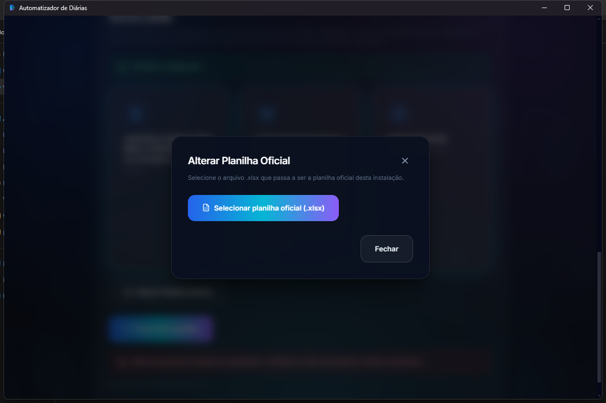
Tela “Alterar Planilha Oficial”, com a planilha já validada.
⚠ Atenção
Sempre selecione a Planilha Oficial utilizada pelo setor — nunca uma cópia pessoal, um rascunho
ou uma versão de teste. Todo processamento e toda finalização gravam diretamente no arquivo que estiver
configurado aqui.
✕ Se a planilha estiver indisponível
Se o arquivo configurado for movido, renomeado, excluído, ou estiver aberto e bloqueado por outro
programa (como o Excel), o aplicativo avisa que a planilha está inacessível e pede para você
selecioná-la novamente em Alterar Planilha Oficial. Feche o Excel antes de processar ou
finalizar diárias.
4
Navegação
Tela inicial (Hub)
Depois de configurada a planilha, esta é a tela central do aplicativo — a partir dela você escolhe o
que precisa fazer.
Tela inicial — os três módulos disponíveis e o alerta de Documentos Hábeis pendentes.
📄
Processamento da Planilha — processa PDFs do SEI e preenche automaticamente a planilha oficial.
☑️
Central Inteligente de Conferência — consulta servidores, duplicidades e informações operacionais antes de processar.
📊
Central Analítica — pesquisa, filtra e analisa diárias já lançadas, com dashboards e relatórios.
No canto superior esquerdo de qualquer tela de funcionalidade, dois botões ficam sempre disponíveis:
←
Voltar — retorna para esta tela inicial.
⚙️
Configurações — abre a tela para alterar a Planilha Oficial a qualquer momento.
💡 Dica
Se aparecer o aviso “Documentos Hábeis Pendentes”, clique em Ver Pendências — ele leva
direto para a Central Analítica já filtrada nesses processos, sem precisar configurar filtro nenhum.
5
Módulo 1
Processando Diárias
Abra pelo card Processamento da Planilha. Esta é a função usada no dia a dia para transformar
PDFs de processos do SEI em linhas novas na Planilha Oficial.
PDF
→
Selecionar
→
Processar
→
Conferir
→
Preencher planilha
→
Resultado
Clique em Selecionar PDFs (ou arraste os arquivos diretamente para a janela) — use os PDFs
da pasta PDFS A PROCESSAR.
Confira a lista de arquivos selecionados. É possível remover um item clicando no × ao lado dele.
Clique em Processar. Nesta etapa, nada ainda é gravado na planilha — o aplicativo
apenas lê e extrai as informações dos PDFs.
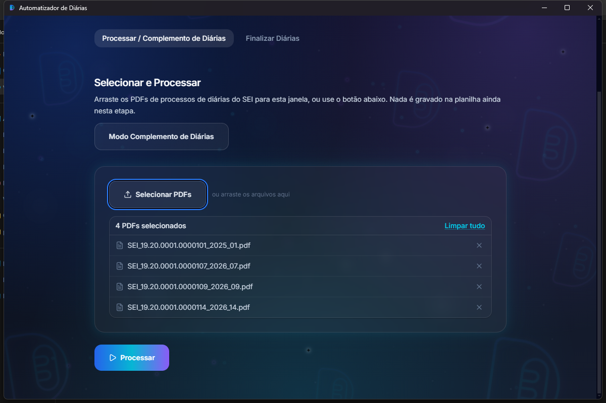
Fila de PDFs selecionados, pronta para processar.
Aguarde a conclusão — os contadores de Total, Sucesso e Erro aparecem
assim que o processamento termina.
Confira a pré-visualização antes de gravar qualquer coisa na planilha: SEI, CPF, período e
trecho extraídos de cada PDF.
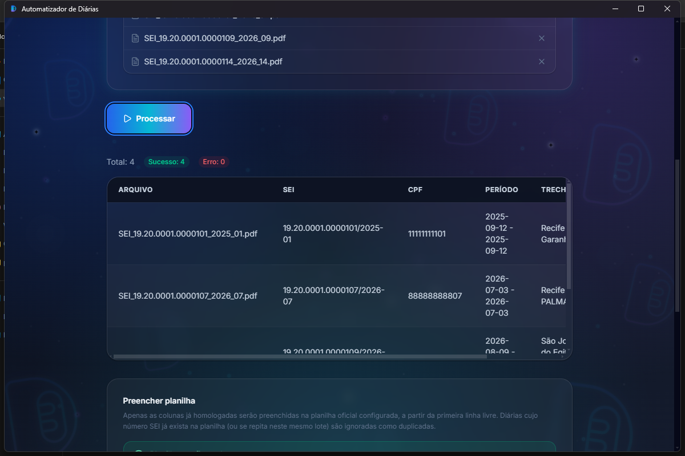
Pré-visualização dos dados extraídos, antes de preencher a planilha.
Estando tudo correto, clique em Preencher planilha. Só agora os dados são gravados na
Planilha Oficial, sempre a partir da primeira linha livre.
⚠ Atenção
Enquanto o aplicativo estiver processando ou preenchendo a planilha, não feche o aplicativo nem
troque a Planilha Oficial. Os botões ficam bloqueados automaticamente durante essas operações —
se você tentar sair, o aplicativo pede confirmação antes de interromper.
Conferindo o resultado final
Depois de preencher a planilha, a tela final mostra o resumo completo e disponibiliza as ações mais
usadas em seguida:
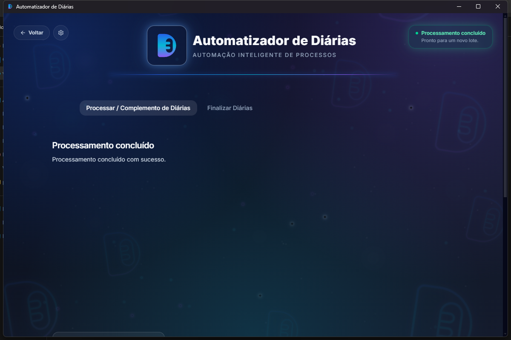
Tela de processamento concluído.
📗
Abrir Planilha — abre a Planilha Oficial no Excel.
💾
Salvar Como... — salva uma cópia da planilha em outro local.
📄
Abrir Relatório / Salvar Relatório — o relatório detalhado desta execução.
📁
Abrir Pasta dos Resultados — pasta com os arquivos gerados neste lote.
Entendendo os resultados e possíveis erros
Cada PDF processado recebe um status na tabela de resultado. Se apenas alguns PDFs de um lote grande
derem problema, não é preciso refazer o lote inteiro — confira só os arquivos apontados:
Status
O que significa
Inserido
A diária foi gravada normalmente na planilha.
Inserido (SEI já existente)
Gravado mesmo assim — só ocorre no Modo Complemento de Diárias.
Duplicado no lote
O mesmo SEI apareceu duas vezes no lote enviado — só a primeira ocorrência é gravada.
Já existe na planilha
Esse SEI já estava cadastrado — nenhuma linha nova foi criada.
Necessita inserção manual
O PDF não pôde ser gravado automaticamente — insira essa diária manualmente e revise o motivo indicado na coluna “Motivo”.
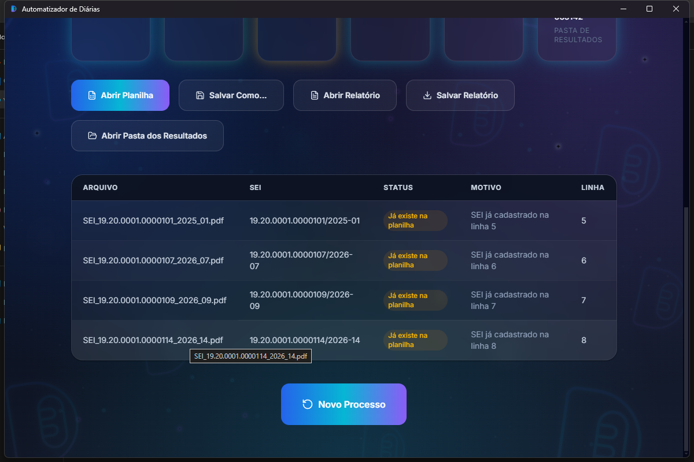
Tabela detalhada de resultado, com o status de cada PDF.
Terminado o lote, clique em Novo Processo para reiniciar a tela e processar o próximo grupo de
PDFs.
Modo Complemento de Diárias
Use quando o PDF se refere a um complemento de uma diária já lançada anteriormente (não a um
processo novo). Na mesma tela de Processamento, ative o botão Modo Complemento de Diárias antes
de processar. Com o modo ativo:
Um SEI já existente na planilha não impede mais a gravação da nova linha.
A coluna de aviso da planilha recebe automaticamente a marcação “COMPLEMENTO DE DIÁRIAS”.
O restante do fluxo (selecionar, processar, conferir, preencher) é idêntico ao processamento normal.
6
Módulo 2
Central de Conferência
Use antes de processar um PDF para checar rapidamente a situação de um servidor: se ele já está
cadastrado, se já existe diária no mesmo período (duplicidade) e se a janela de prazo já está liberada.
Nada é gravado nesta tela — ela só consulta e informa.
Informe o CPF do servidor, o período inicial e o período final da diária.
Clique em Realizar Conferência.
Formulário da Central de Conferência.
O resultado aparece com um selo de veredito:
🟢
APTO PARA PROCESSAMENTO — pode seguir com tranquilidade para o Processamento.
🟠
REVISAR — algo precisa da sua atenção antes de continuar (veja o checklist abaixo do selo).
Checklist de conferência — neste exemplo, o CPF ainda não está cadastrado.
CPF não cadastrado — o que fazer?
CPF não localizado
→
Cadastrar servidor/membro
→
Consultar no Arquimedes
→
Preencher cadastro
→
Salvar
→
Verificar sync. do Drive
Quando o checklist mostrar “Servidor ainda não cadastrado”, um botão
Cadastrar servidor/membro aparece ao lado do item. Ao clicar:
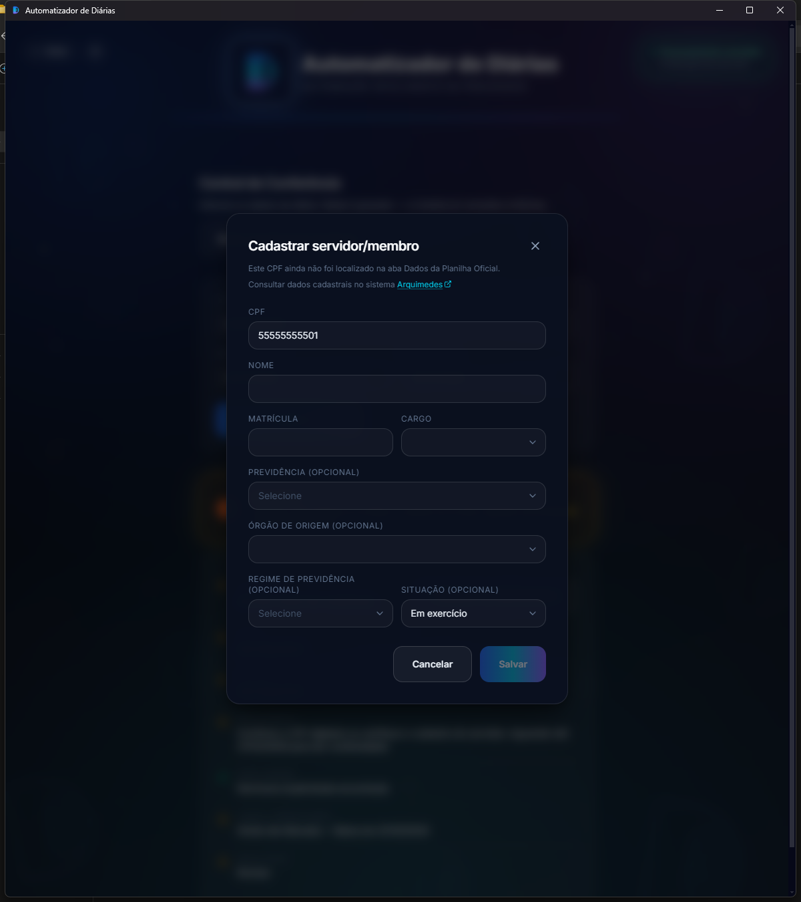
Modal de cadastro de servidor/membro, com o link para o Arquimedes.
Clique no link Arquimedes para consultar os dados cadastrais oficiais do servidor.
O campo CPF vem pré-preenchido, mas pode ser corrigido se estiver digitado errado.
Preencha Nome, Matrícula e Cargo (obrigatórios); Previdência, Órgão de origem,
Regime de previdência e Situação são opcionais.
Clique em Salvar.
⚠ Atenção
Depois de salvar, o aplicativo pede para você confirmar que o Google Drive já sincronizou a
versão atualizada da planilha antes de continuar (clique em Já sincronizei / Continuar). O
aplicativo não verifica essa sincronização sozinho — a confirmação é sempre manual.
Gerando o Histórico para o e-Fisco
Quando o resultado for APTO PARA PROCESSAMENTO, um segundo formulário aparece para gerar o
texto de histórico usado no e-Fisco. Informe o Número do SEI e o Destino, clique em
Gerar Histórico e depois em Copiar Histórico para colar diretamente no e-Fisco.
💡 Dica
No Modo Complemento de Diárias (mesmo botão de alternância presente nesta tela), se a simulação
representar uma parcial isolada (sem diária integral), marque a opção correspondente no formulário —
o texto gerado passa a mencionar “UMA PARCIAL” corretamente nesse cenário específico.
7
Módulo 3
Central Analítica
A Central Analítica utiliza os dados já sincronizados da Planilha Oficial para permitir pesquisas,
filtros, dashboards e relatórios sem precisar abrir o Excel.
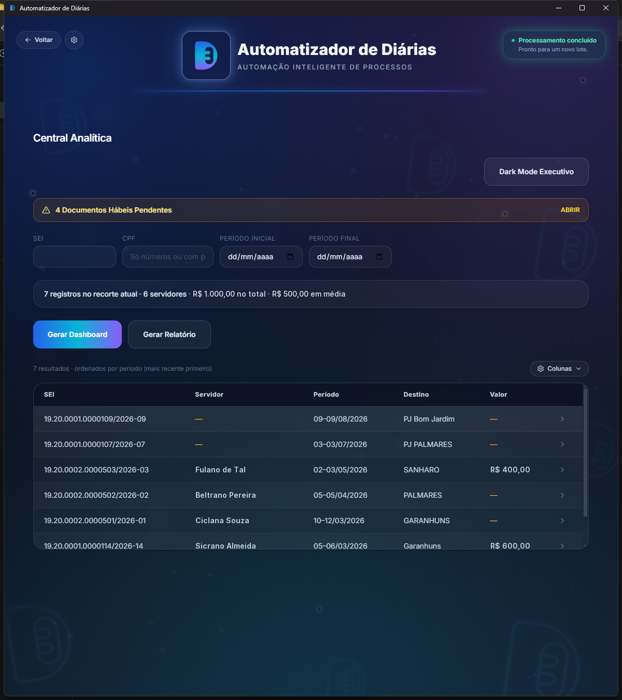
Central Analítica — filtros, indicadores e listagem de diárias.
🔎
Filtros — pesquise por SEI, CPF ou período (inicial/final).
📈
Gerar Dashboard / Gerar Relatório — indicadores e relatório exportável do recorte filtrado.
🌓
Dark Mode Executivo — visual alternativo, pensado para apresentações e leitura executiva.
⚙️
Colunas — escolha quais colunas aparecem na tabela de resultados.
💡 Dica
O resumo acima da tabela (“N registros no recorte atual · N servidores · valor total · valor médio”)
atualiza sozinho a cada filtro aplicado — não é preciso clicar em nenhum botão de atualizar.
8
Módulo 4 · Aba “Finalizar Diárias”
Finalizando (confirmando) diárias
Esta função confirma, na Planilha Oficial, que o comprovante e a confirmação de diárias
de um processo já foram recebidos — é o que grava “SIM” nas colunas correspondentes. Está dentro de
Processamento da Planilha, na aba Finalizar Diárias. Use os PDFs separados na pasta
PDFS DIÁRIAS PARA CONFIRMAR.
Selecionar PDFs
→
Analisar
→
Sistema localiza os SEIs
→
Alertas (se houver)
→
Você decide finalizar
→
Planilha recebe SIM/SIM
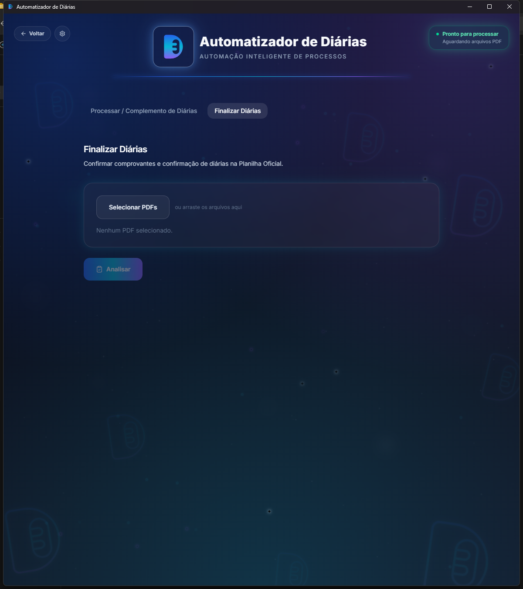
Tela inicial de Finalizar Diárias.
Clique em Selecionar PDFs e escolha os processos da pasta PDFS DIÁRIAS PARA CONFIRMAR.
Clique em Analisar. O aplicativo localiza o SEI de cada processo na Planilha Oficial e
separa o lote em quatro grupos.
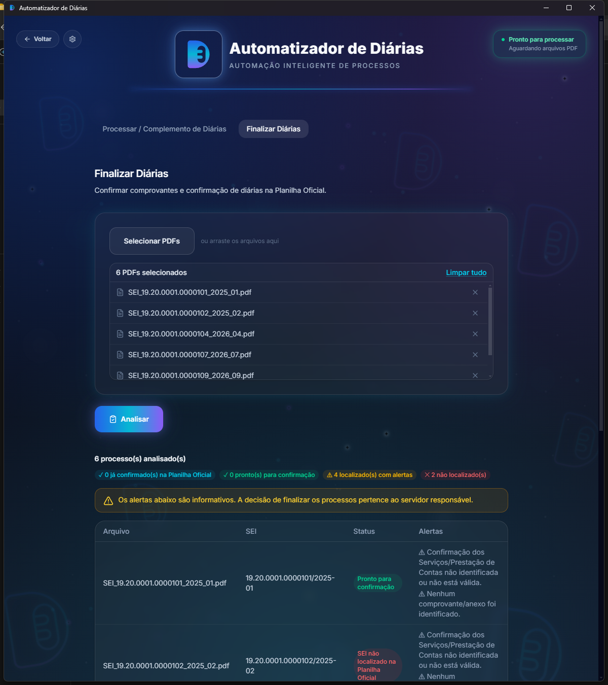
Resultado da análise, separado em grupos, com alertas informativos.
Status
O que significa
Já confirmada na Planilha Oficial
Comprovante e confirmação já estavam “SIM/SIM” — nada será alterado.
Pronto para confirmação
O SEI foi localizado e o processo pode ser finalizado.
SEI não identificado no processo
O aplicativo não conseguiu extrair um número de SEI deste PDF.
SEI não localizado na Planilha Oficial
O SEI extraído não foi encontrado na planilha — nada é alterado para este processo.
Estado parcial — revisão manual
As colunas de comprovante/confirmação têm um valor fora do padrão — revise manualmente na planilha.
Erro ao ler o PDF
Falha técnica real na leitura do arquivo — tente novamente ou abra o PDF para conferir se não está corrompido.
Sobre os alertas
⚠ Possível pendência não é erro
Um alerta (⚠) ao lado de um processo “pronto para confirmação” não significa que o processo
está errado. Significa apenas que o aplicativo não conseguiu confirmar automaticamente alguma
informação — por exemplo, não encontrou o documento de confirmação de serviços ou um comprovante
anexado. A decisão de finalizar continua sendo sua. O aplicativo nunca bloqueia a finalização
por causa de um alerta — só a localização do SEI decide isso.
Role a tela para ver a tabela completa e o botão de confirmação, com a contagem exata de processos que
realmente precisam de alguma gravação:
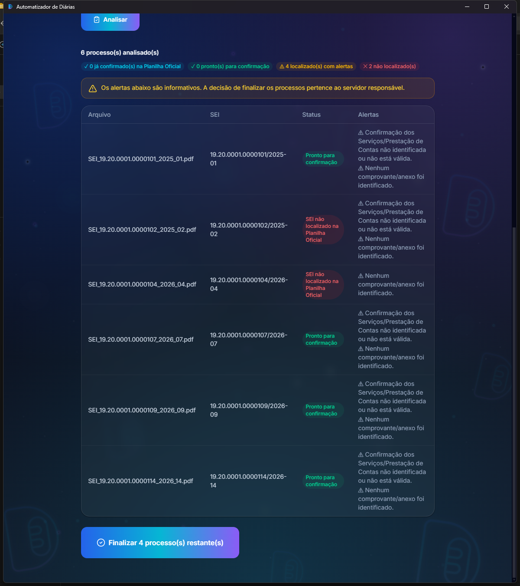
Tabela completa da análise, com o botão “Finalizar processos restantes”.
Clique em Finalizar N processo(s) restante(s).
Confirme na caixa de diálogo que aparece — ela vale para todo o lote, não é preciso confirmar processo por processo.
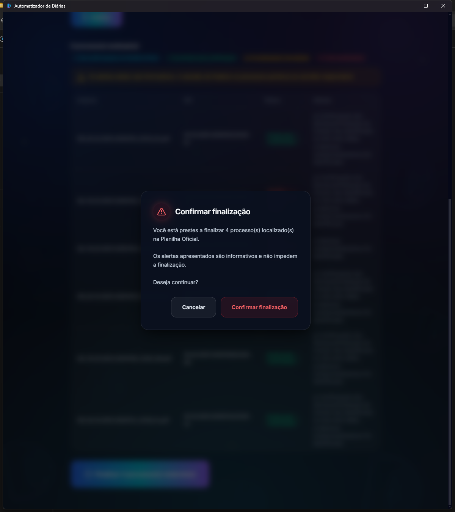
Confirmação final antes da gravação na planilha.
Resultado e aviso obrigatório
A tela final reconcilia todo o lote enviado — nenhum processo desaparece da lista, mesmo os que
não puderam ser finalizados:
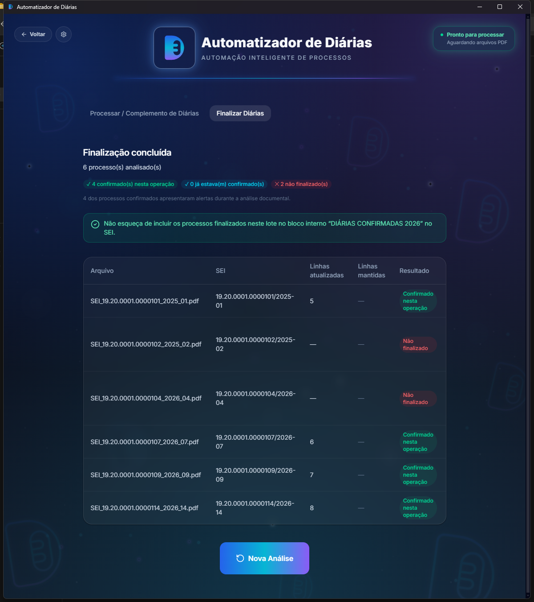
Tela de finalização concluída, com o aviso obrigatório em destaque.
📌 NÃO ESQUEÇA DE INCLUIR OS PROCESSOS FINALIZADOS NESTE LOTE NO BLOCO INTERNO
“DIÁRIAS CONFIRMADAS 2026” NO SEI.
Esse aviso só aparece quando pelo menos um processo foi realmente confirmado nesta operação —
se todos já estavam “SIM/SIM”, ele não é exibido, porque nenhuma gravação nova aconteceu.
9
Encerrando o trabalho
Fechando o aplicativo
Ao clicar no X da janela, o aplicativo sempre pede confirmação antes de fechar:
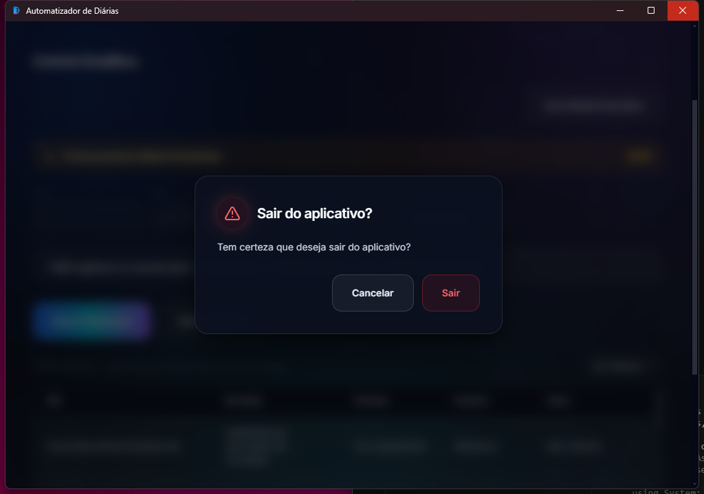
Confirmação de saída do aplicativo.
Clique em Sair para fechar definitivamente, ou em Cancelar para continuar trabalhando.
⚠ Atenção
Se houver uma operação crítica em andamento (processamento ou preenchimento da planilha), a mensagem
muda para avisar que sair agora vai interromper essa operação. Evite fechar o aplicativo nesse
momento — espere a operação terminar antes de sair, sempre que possível.
10
Referência rápida
Boas práticas e fluxo resumido
Boas práticas
Confira sempre se a Planilha Oficial correta está selecionada antes de processar ou finalizar.
Aguarde cada operação terminar antes de iniciar a próxima — não processe dois lotes ao mesmo tempo.
Leia os alertas exibidos nas telas — mesmo quando não bloqueiam, eles indicam algo que vale revisar.
Não edite a mesma Planilha Oficial simultaneamente em vários computadores.
Mantenha os PDFs organizados nas três pastas de trabalho (seção 1).
Depois de um cadastro ou alteração importante, confira se o Google Drive já sincronizou a nova versão da planilha.
Nunca ignore uma mensagem de erro — revise o motivo indicado antes de tentar novamente.
Revise sempre os processos sinalizados pelo aplicativo (⚠ e ✕) antes de considerar o trabalho concluído.
Fluxo geral do aplicativo
AUTOMATIZADOR DE DIÁRIAS
NOVA DIÁRIA
↓
PDFS A PROCESSAR
↓
Processar
↓
Preencher planilha
↓
Conferir resultado
↓
PDFS PROCESSADOS (mover manualmente)
DIÁRIA CONCLUÍDA
↓
PDFS DIÁRIAS PARA CONFIRMAR
↓
Finalizar Diárias
↓
SIM / SIM na planilha
↓
Aviso: bloco “DIÁRIAS CONFIRMADAS 2026” no SEI
✔ Pronto
Este guia cobre o uso operacional do Automatizador de Diárias 2.0.0. Em caso de dúvidas sobre uma
regra de negócio específica (ex.: janela de processamento, cálculo de diárias), consulte o setor
responsável — este documento descreve apenas o funcionamento do aplicativo.